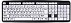

¡Tips para tu Mac y Windows!
En esta sección, aprenderás algunos tips que te harán más sencilla la convivencia con tu computadora. Todas las aplicaciones que tienes instaladas en tu equipo, tienen algo en común, ¿Sabes de qué hablo? Exactamente, de los atajos (Shortcuts), algunos de ellos muy comunes en las actividades diarias; como salvar tu documento, imprimirlo, cortar, pegar, etc. Es importante resaltar o preguntar, ¿qué tipo de Sistema Operativo tienes? ya que cambian algunas teclas para ejecutar dichos comandos. Por ejemplo en Mac, para salvar tu documento, usas la combinación de teclas: Command (Cmd) + S y en Windows Control (Ctrl) + S (Salvar el documento).
- IMPORTANTE: Ya que hablamos de estas teclas, tienes que saber que "Alt", "Alt-Gr", "Shift", "fn". También intervienen con otra lista de atajos. Los cuales los haré saber en nuestras Asesorías.
Comandos en Mac
Vamos a empezar este glosario de atajos de teclado para Mac, las que utilizamos más a menudo. Toma nota:
Nota: Te recuerdo que en Mac, la tecla más empleada para los atajos es "Cmd" de tu teclado.
Comandos en Windows 
En esta sección conocerás los atajos más usados en Windows; y presta atención.
Nota: Te recuerdo que en Windows, la tecla más empleada para los atajos es "Ctrl" de tu teclado.